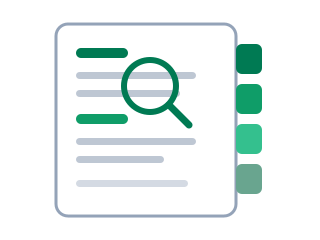

Opslagsværk
Oversigt og stikord
Hele kursussiden på ét sted: den fulde indholdsfortegnelse og et stikordsregister som bagerst i en bog. Brug browserens søgning (Ctrl og F) til at finde endnu hurtigere.

Indholdsfortegnelsen
Alle sider med alle deres afsnit. Listen bygger sig selv ud fra sidernes indhold, så den er altid opdateret.
Stikordsregisteret
Begreber, værktøjer og nedslag i alfabetisk orden, med link til det sted, de forklares eller bruges.
- Agent (ordbogen), i praksis i modul 2
- AI-forordningen, i diskussionerne
- AI på dit job (åbningsøvelsen)
- Alignment
- AlphaFold og AlphaZero
- Apps Script, i dybden på teknik-siden
- Audio Overview (podcastfunktionen)
- Bias
- Canva Code (alternativ i modul 1), på værktøjssiden
- Claude Code, i terminalen
- Connectors (send mig det som mail), connector-begrebet
- Copilot (lydoversigter), Copilot i Power Automate
- Datasikkerhed (kursets grundregel)
- Deep Blue
- Din praksis (kursets røde tråd)
- Evaluering (deltagersiden)
- Flow, udløser og handling
- Formidling (fortæl det videre)
- GitHub og repositories, git i terminalen
- GitHub Pages (udgiv din side)
- Governance (aftal det med IT)
- Hallucination
- Historien i elleve nedslag
- Instrumentel konvergens
- Iteration (prøv, kig, ret)
- Kildeforankring (RAG)
- Kontekstvindue og token
- Lovable (byg din første app)
- Lokal AI (LM Studio og Ollama)
- Maskinrummet (hvad sker der derinde)
- Multimodal, modalitet i praksis
- n8n og Make
- NotebookLM
- Paperclip (appen)
- Papirklips-maskinen (tankeeksperimentet)
- Power Automate
- Promptmønsteret (rolle, kontekst, opgave, format)
- Pull request (godkend som en chef)
- Something Big Is Happening (læsetip)
- Sprogmodel (LLM)
- Tale til tale (tal med den)
- The Thinking Game (dokumentaren)
- Transformeren og Turing-testen
- Typer af AI (regelbaseret, prediktiv, generativ)
- Udviklingsteam (bestiller, bygger, godkender)
- Vibe coding
- Værktøjsvalg (de fem spørgsmål)
- Webhook
- Værdi for verden (de fem eksempler)
- Zapier
- Zero human companies